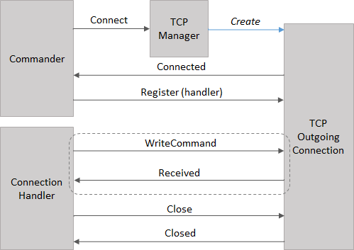
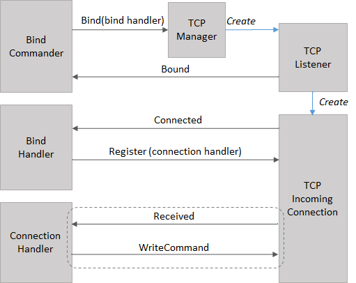

Akka I/O
The I/O extension provides an non-blocking, event driven API that matches the underlying transports mechanism.
Detail of the I/O extension's design can be found in the Akka JVM documentation.
Getting Started
Every I/O Driver has a special actor, called the manager, that serves as an entry point for the API. The manager for a particular driver is accessible through an extension method on ActorSystem. The following example shows how to get a reference to the TCP manager.
using Akka.Actor;
using Akka.IO;
...
var system = ActorSystem.Create("example");
var manager = system.Tcp();
TCP Driver
Client Connection
To create a connection an actor sends a Tcp.Connect message to the TCP Manager. Once the connection is established the connection actor sends a Tcp.Connected message to the commander, which registers the connection handler by replying with a Tcp.Register message.
Once this handshake is completed, the handler and connection communicate with Tcp.WriteCommand and Tcp.Received messages.
The following diagram illustrate the actors involved in establishing and handling a connection.

The following example shows a simple Telnet client. The client send lines entered in the console to the TCP connection, and write data received from the network to the console.
class TelnetClient : UntypedActor
{
public TelnetClient(string host, int port)
{
var endpoint = new DnsEndPoint(host, port);
Context.System.Tcp().Tell(new Tcp.Connect(endpoint));
}
protected override void OnReceive(object message)
{
if (message is Tcp.Connected)
{
var connected = message as Tcp.Connected;
Console.WriteLine("Connected to {0}", connected.RemoteAddress);
// Register self as connection handler
Sender.Tell(new Tcp.Register(Self));
ReadConsoleAsync();
Become(Connected(Sender));
}
else if (message is Tcp.CommandFailed)
{
Console.WriteLine("Connection failed");
}
else Unhandled(message);
}
private UntypedReceive Connected(IActorRef connection)
{
return message =>
{
if (message is Tcp.Received) // data received from network
{
var received = message as Tcp.Received;
Console.WriteLine(Encoding.ASCII.GetString(received.Data.ToArray()));
}
else if (message is string) // data received from console
{
connection.Tell(Tcp.Write.Create(ByteString.FromString((string)message + "\n")));
ReadConsoleAsync();
}
else if (message is Tcp.PeerClosed)
{
Console.WriteLine("Connection closed");
}
else Unhandled(message);
};
}
private void ReadConsoleAsync()
{
Task.Factory.StartNew(self => Console.In.ReadLineAsync().PipeTo((ICanTell)self), Self);
}
}
Server Connection
To accept connections, an actor sends an Tcp.Bind message to the TCP manager, passing the bind handler in the message. The bind commander will receive a Tcp.Bound message when the connection is listening.
The bind handler will receive a Tcp.Connected message for each accepted connection, and needs to register the connection handler by replying with a Tcp.Register message. Thereafter it proceeds the same as a client connection.
The following diagram illustrate the actor and messages.

The following code example shows a simple server that echo's data received from the network.
class EchoServer : UntypedActor
{
public EchoServer(int port)
{
Context.System.Tcp().Tell(new Tcp.Bind(Self, new IPEndPoint(IPAddress.Any, port)));
}
protected override void OnReceive(object message)
{
if (message is Tcp.Bound)
{
var bound = message as Tcp.Bound;
Console.WriteLine("Listening on {0}", bound.LocalAddress);
}
else if (message is Tcp.Connected)
{
var connection = Context.ActorOf(Props.Create(() => new EchoConnection(Sender)));
Sender.Tell(new Tcp.Register(connection));
}
else Unhandled(message);
}
}
class EchoConnection : UntypedActor
{
private readonly IActorRef _connection;
public EchoConnection(IActorRef connection)
{
_connection = connection;
}
protected override void OnReceive(object message)
{
if (message is Tcp.Received)
{
var received = message as Tcp.Received;
if (received.Data.Head == 'x')
Context.Stop(Self);
else
_connection.Tell(Tcp.Write.Create(received.Data));
}
else Unhandled(message);
}
}
Akka IO Transport
The AkkaIOTransport contrib project implements an Akka Remote transport based on the I/O extension. The following shows how to configure Akka Remote to use the IO Transport.
akka {
actor {
provider = "Akka.Remote.RemoteActorRefProvider, Akka.Remote"
}
remote {
enabled-transports = ["akka.remote.akka-io"]
akka-io {
transport-class = "Akka.Remote.AkkaIOTransport.AkkaIOTransport, Akka.Remote.AkkaIOTransport"
hostname = "127.0.0.1"
port = 9098
}
}
}